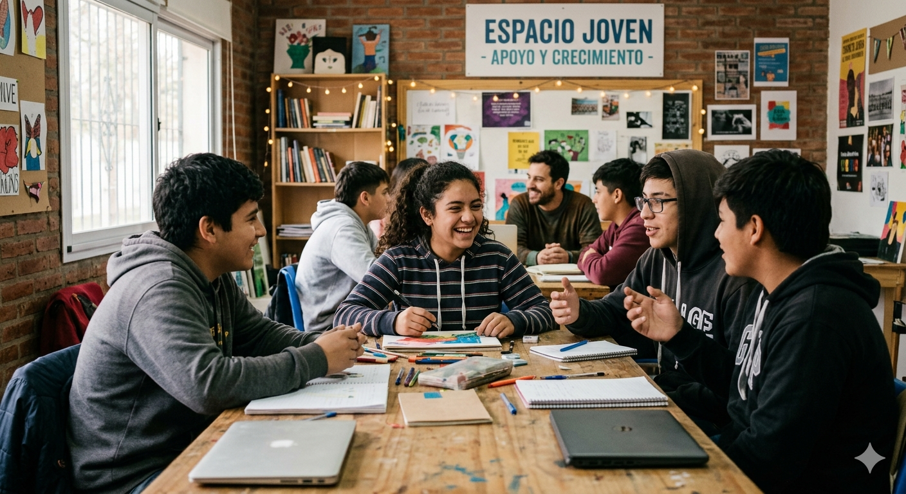
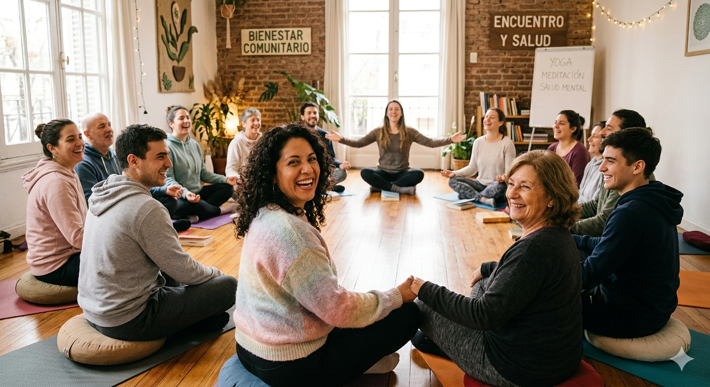

Atencion Psicologica Gratuita
Sabemos que cuidar la salud mental es fundamental. Por eso, ofrecemos un espacio seguro y gratuito de escucha y acompañamiento para quienes están atravesando momentos difíciles y no cuentan con los recursos para un servicio privado.
Horarios: Lunes a Viernes de 09:00 a 18:00 hs (Con turno previo).
Apoyo a Jovenes y Adolescentes

Este proyecto esta orientado a adolescentes, jovenes y adultos que necesiten acompañamiento emocional, apoyo psicologico o espacios de contencion ante situaciones personales dificiles.
que cada adolescente desarrolle herramientas para su proyecto de vida, fomentando la autoconfianza y la integración social en un ambiente de respeto y contención.
Horarios: Viernes de 16:00 a 19:00 hs.
Talleres de Bienestar

Un espacio dedicado al cuidado integral. Realizamos talleres grupales sobre manejo del estrés, ansiedad, autoestima y habilidades emocionales.
A través de actividades de meditación y charlas de salud mental, buscamos fortalecer los vínculos comunitarios y brindar herramientas para el bienestar diario.